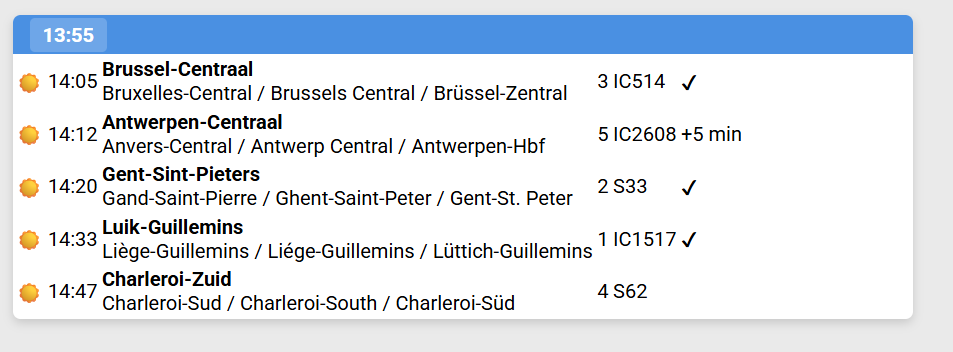
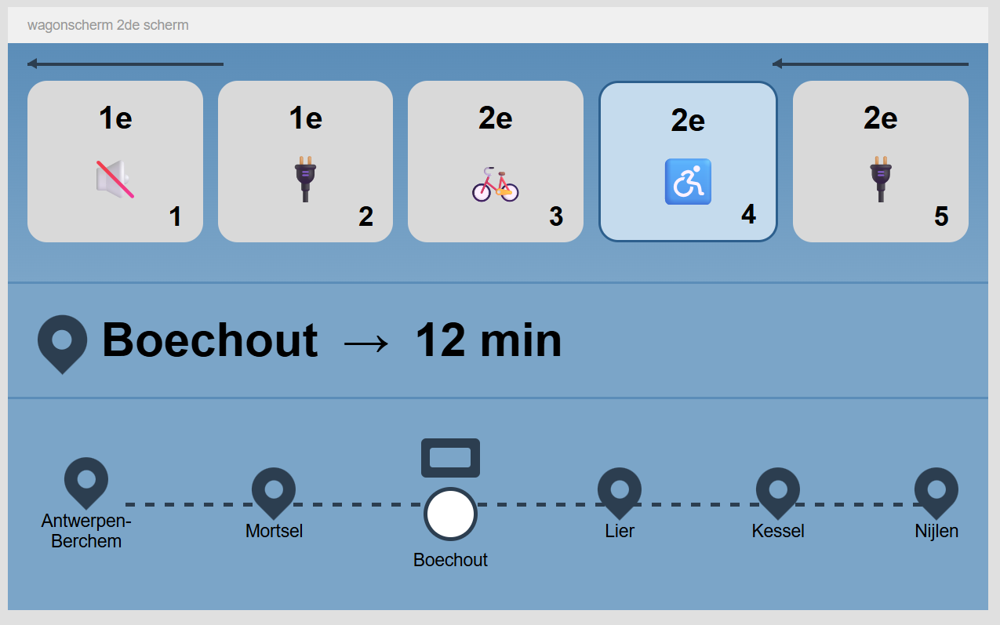
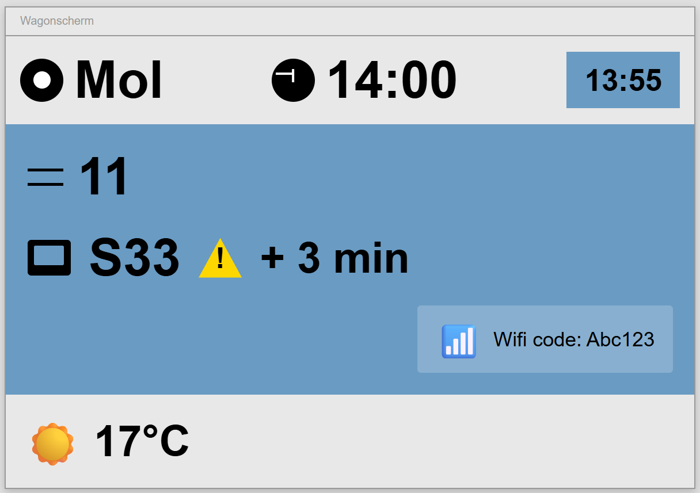
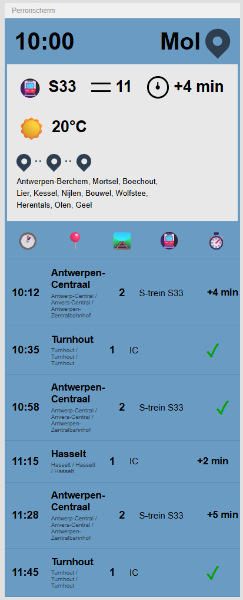

Figma schermen in ChatGPT - Week 4




Hier zie je de schermen die ik heb laten maken door ChatGPT. Er zijn gelijkenissen met de borden die ik zelf heb gemaakt en degene van ChatGPT, maar het is zeker niet perfect. Ik heb gevraagt om de schermen na te maken en daarna heb ik apart nog aanpassingsvragen gesteld zodat de delen die niet juist waren aangepast werden. Daardoor lijken de schermen toch nog vrij hard op de originele. Soms werkte het ook niet zoals ik had gehoopt, maar ik ben algemeen wel blij met het resultaat.
Je ziet wel dat het overzichtsscherm niet dezelfde groote heeft zoals het originele overzichtsscherm. De rijen zijn veel dichter bij elkaar en de iconen missen ook. Het perronscherm en de wagon schermen lijken wel heel hard op degene die ik heb gemaakt.